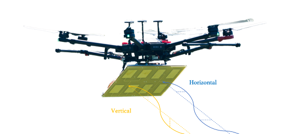
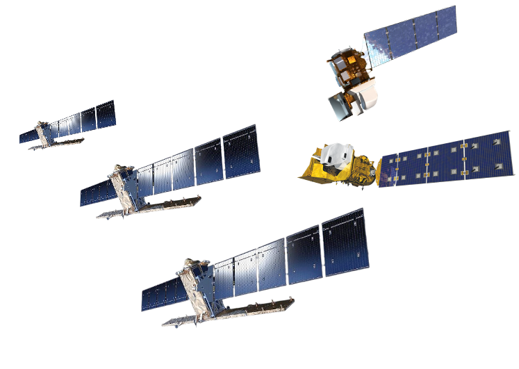

stations.csv
(sensors per depth + precipitation).
Live counts sensors whose timeseries currently has data — the
gap is hardware not yet streaming.


A record of lab tours, partner-agency visits, and field campaigns at the Hampyeong cal/val site. Click a visit on the left to view its photo set.
Visitor counts, country breakdown, referrers, and top pages are tracked via Cloudflare Web Analytics. The full dashboard opens in a new tab:
Open Cloudflare Analytics dashboard ↗hyunglok-kim.github.io.data-cf-beacon token (a 32-char hex string).index.html, find YOUR_CF_TOKEN in the Cloudflare beacon script near the bottom, replace it with your token, commit + push.
This tab is hidden by default. It becomes visible only after
loading the site with ?admin=<secret> in the URL.
The unlock state is stored in localStorage so subsequent
visits keep it visible on this browser.
The Hampyeong site is a community-funded cal/val effort run by the HydroAI lab. Every contribution goes 100% toward in-situ sensors and data loggers deployed in the field — not overhead, not travel, not salaries. Your support directly grows the network of measurements that anchor satellite missions to ground truth.
We are building the world's reference site for validating future satellite missions — at the highest spatial resolution and the highest measurement quality ever assembled for soil-moisture cal/val. From microwave radiometry and SAR backscatter to optical and thermal retrievals, every product that flies overhead deserves measurements rich and precise enough to trust against. Hampyeong is where we make that trust quantifiable.
We instrument in stages, each anchored to the EASE-Grid 2.0 cells used by NASA SMAP and partner missions:
Each stage is sensor-bound — every donation buys real hardware that stays in the field.
To donate or to discuss in-kind contributions (sensors, loggers, field time), please reach out directly:
— Hyunglok Kim, PI, HydroAI lab